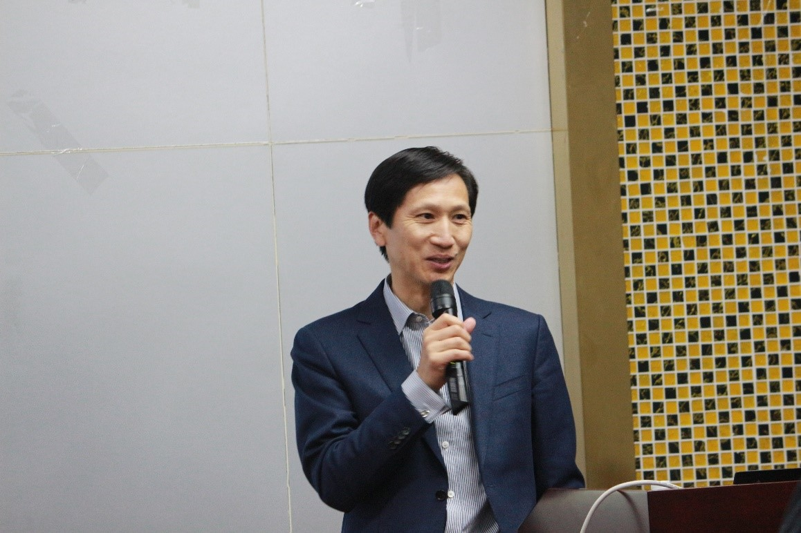
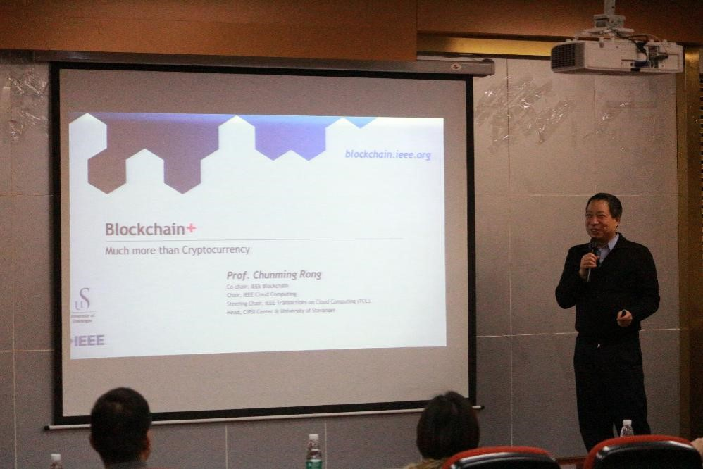
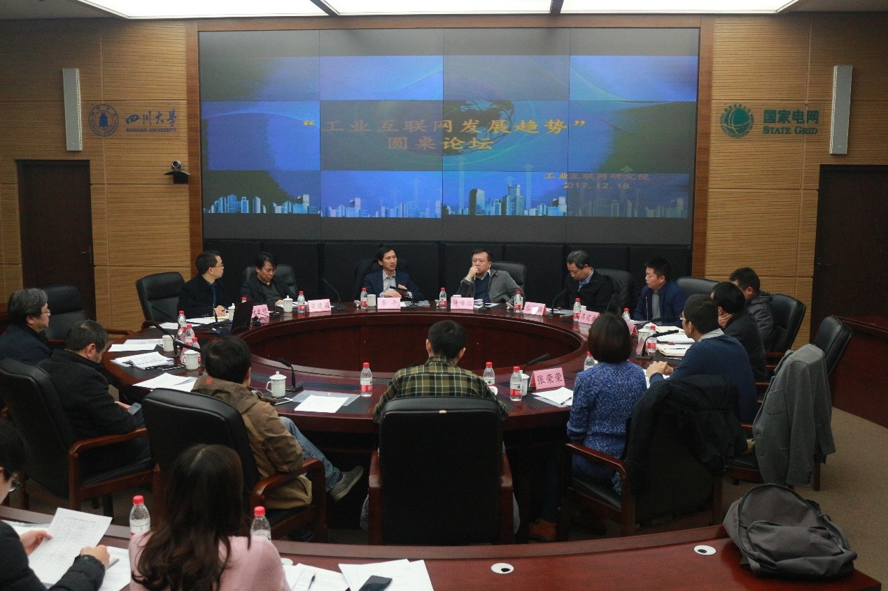

12月18日，四川大学工业互联网研究院成功举办了以“工业互联网前沿技术”为主题的学术会议。 本次学术会议特邀东土科技集团李平董事长出席，并邀请专家Chunming Rong院士（挪威），以及于季弘博士（加拿大）、 张荣荣博士（加拿大）以及杨彦兵博士（新加坡）等参会。
上午08:30，会议在四川大学望江校区基础教学楼B座302计算机学院学术报告厅拉开序幕， 学术报告由四川大学工业互联网研究院负责人主持。东土科技集团董事长、工业互联网研究院名誉院长李平致开幕词， 他指出，工业互联网在企业中的应用越来越广泛，这将是一个新的、热门的研究方向，希望四川大学工业互联网研究院能在技术上有新的突破， 培养出更多的能够将理论应用于实际的优秀人才。
接着，Chunming Rong院士及三位博士分别对工业互联网领域的前沿技术及自己所做的研究进行了介绍。Chunming Rong院士对区块链技术及其应用做了精彩的报告， 其他三位博士分别对无线体域网、RFID以及LED可视光通信等技术做了详尽的介绍与分析，并对同学们的问题进行了解答。
下午14:00在行政楼401会议室召开了“工业互联网发展趋势”圆桌论坛。四川大学副校长许唯临、东土科技集团董事长兼工业互联网研究院名誉院长李平、 四位特邀嘉宾、对外联络办公室主任荣建国、科研院院长褚良银、科研院副院长邹勇、计算机学院院长吕建成、空天学院院长王俊峰、制造学院院长王杰、 制造学院副院长赵武、工业互联网研究院负责人、教师代表刘怡光和胡大裟等出席了会议，会议由科研院院长褚良银主持。
副校长许唯临致开场词。他强调，各学院一流大学的建设方案正在制定中，工业互联网研究院可以从以下五个方面展开近期工作：1）制定研究院的发展规划，过渡时期的工作必须要明确；2）建平台，现在以滨江楼两间办公室为主， 下一步将进驻江安校区空天学院大楼；3）建成平台后需全面引进研究院相关人才；4）抓项目，研究院以多学科交叉支撑，这种形势下必须要以项目为结合点， 才能更好的推进工作；5）聚人心，各学科之间需要经常交流讨论，以确定各自工作的虚实，找到突破口。
东土科技集团董事长、四川大学工业互联网研究院名誉院长李平发表了对工业互联网发展的看法。他提出工业互联网技术能简化流程、提高效率，并在能源保证、 智能制造、生命健康等领域发挥出巨大的作用。国家也高度重视工业互联网技术，希望学校能获得地方政府的支持，将学校与产业相结合进行试点工作等。
Chunming Rong院士提出应用过程中的问题是科学研究的动力，因此研究院应该以生活中的障碍为动力，进行基础研究。 同时指出区块链的机制能给工业制造带来相应的机制改变，认为工业互联网+区块链将会给中国制造带来一个机会。
接着，各支撑学科学院院长分别发就工业互联网未来的发展趋势发表了个人看法，并表示将全力支持四川大学工业互联网研究院的发展。 同时，各位与会老师分别发表了自己对工业互联网发展的看法。
最后，科研院院长褚良银结合大家的发言对会议做出了总结，认为工业互联网研究院的发展很有前途，自己将在能力范围之内大力支持。
（供稿人：郭敏）